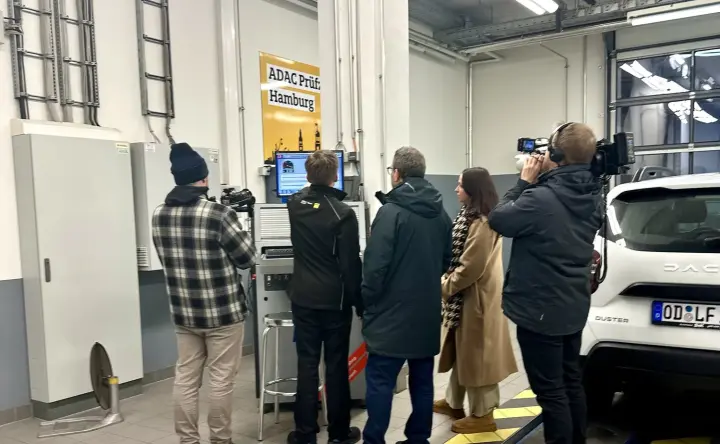
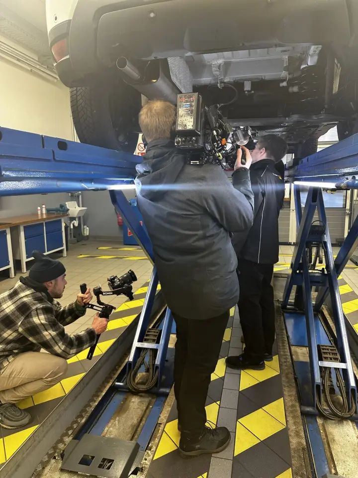
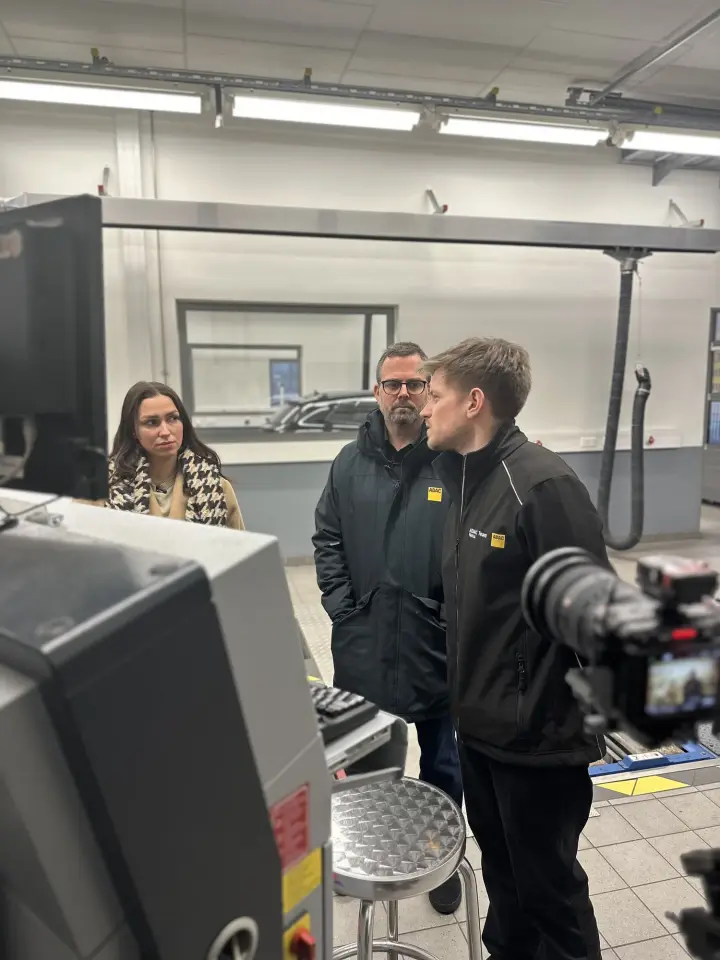

Zum Inhalt springen
GESCHICHTENFABRIK
.TV
Profil
Leistungen
Produktionen
Drehpause
Kontakt
LIVE
00:00:00
Kontakt
Menü
01
Profil
02
Leistungen
03
Produktionen
04
Drehpause
05
Kontakt
Alle Produktionen

Unsere Leistungen
Themen-Entwicklung
Producing
Produktionsleitung
Planung
Dreh vor Ort / EB-Team (Multikamera, 1x nah, 1x weit, Drohne)
Drehender Autor
Schnitt Autor
Filmeditor
Behind the Scenes
01
/ 03


Schließen ✕
Vorherige Produktion
RTL2 · GRIP – Das Motormagazin
Andreas sucht … Kastenwagen für Assistenzärztin
Nächste Produktion
SAT.1 · Frühstücksfernsehen
Zwischen Penthouse und Ballermann